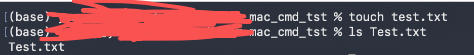
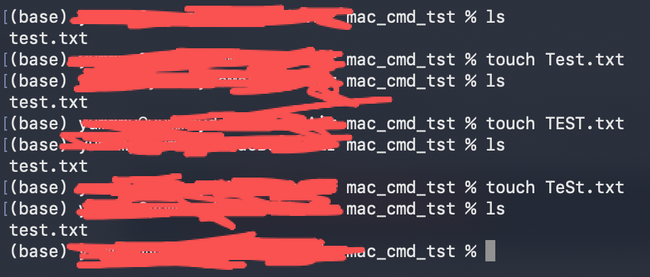
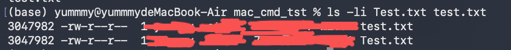
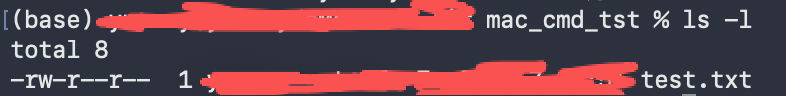
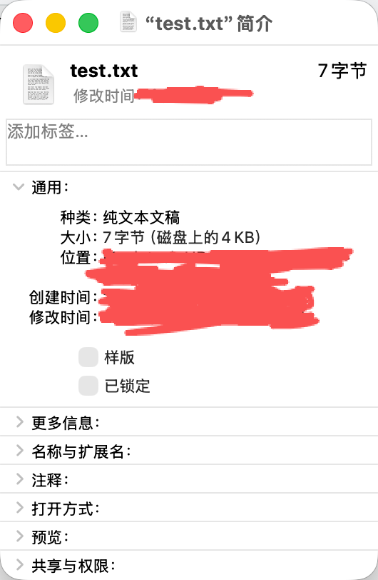

2 文件与目录
你在命令行里，真正接触到的第一个“现实对象”，不是命令本身， 而是 文件和目录。代码、日志、配置、数据、文档——它们最终都会落到文件系统里。
这一章不追求“覆盖所有命令”，而是通过一组连续案例，让你具备一种能力：
在任何一个陌生目录里，快速搞清楚：这里有什么、该看什么、能不能动、怎么动。
2.1 文件系统基础（APFS 的现实影响）
2.1.1 大小写
大小写不是你以为的那样，在 macOS 默认的 APFS 上，大多数用户使用的是大小写不敏感文件系统。
你可以直接验证：
touch test.txt
ls Test.txt你会发现，居然能列出来。这意味着什么？test.txt 和 Test.txt 在默认 macOS 上是同一个文件，但在 Linux 服务器上，它们通常是两个不同文件。

当你在 Mac 上“没问题”的代码， 放到服务器上突然报错， 很多时候不是语言问题，而是文件名问题。
touch Test.txt
touch TEST.txt
touch TeSt.txt
都是同一个文件。
ls -li Test.txt test.txt
2.1.2 权限
先看一个最常见的权限现象：
ls -l
不要试图一次性记住所有字段。你现在只需要抓住一件事，文件是否能被操作，取决于，你是谁 + 你想干什么。
一个最直接的体验方式是：
touch demo.sh
chmod -x demo.sh
./demo.sh
# 输出：zsh: permission denied: ./demo.sh你会得到一个明确的拒绝。
2.1.3 Finder vs CLI
在 Finder 里，你可能看到“文件大小 4 KB”。

但在命令行里：
ls -lh demo.sh
ls -lh test.txt
# 输出
# -rw-r--r-- 1 xx xx 0B x月 x xx:xx demo.sh
# -rw-r--r-- 1 xx xx 7B x月 x xx:xx test.txt你看到的是另一套视角。
再进一步：
du -h demo.sh
du -h test.txt
# 输出
# 0B demo.sh
# 4.0K test.txt你会发现Finder 展示的是逻辑大小，CLI 可以告诉你实际占用空间。当空间、权限、归属出现争议时， 以 CLI 为准。
2.2 浏览目录结构
2.2.1 ls（BSD 行为）、pwd
快速理解一个陌生目录，假设你刚 cd 进一个完全陌生的目录。
第一步，别急着看文件内容：
pwd确认你到底在哪。
第二步：
ls只看名字，不看细节。
第三步：
ls -l你现在知道哪些是目录、哪些是普通文件、哪些明显很大、很小
2.2.2 glob（* ? []）
在 glob 规则里：
*：匹配 任意长度 的任意字符
?：匹配 恰好一个字符
[]：匹配 字符集合中的一个
glob是筛选器，你想只看 .log 文件：
# 只能匹配「当前目录」里的 txt 文件。
ls *.txt只看以 t 开头的文件：
ls t*只看单字符变化的版本文件：
ls file?.txtglob 做不到真正递归。
2.3 查看文件内容
2.3.1 cat
为什么不推荐直接 cat?
你拿到一个日志文件：
cat server.log终端瞬间被刷屏。 这不是 cat 的错，而是使用场景不对。
2.3.2 less
less 是“查看”的默认入口，同样的文件：
less server.log你立刻获得可控滚动、搜索、不破坏终端状态。
任何你“不确定大小和结构”的文件， 第一反应都应该是 less。
2.3.3 head / tail
只看头或尾，你只想确认文件结构：
head test.txt你只关心下面的内容：
tail test.txt2.4 创建、移动、删除
2.4.1 touch
touch 的真实用途。
touch config.yaml它不只是“创建文件”，更常见的用途是，确保一个文件存在，而不关心内容。
2.4.2 mkdir
mkdir 的习惯性用法：
mkdir project
cd project这是新环境的起点。如果你需要多层结构：
mkdir -p data/raw2.4.3 cp / mv
cp / mv 的区别不是“复制 vs 移动”。
在当前目录下，把 test.txt 的内容复制一份，生成新文件 test_cp.txt
cp test.txt test_cp.txt它是生成新实体。
把 test.txt 移动到 archive/ 文件夹内。
把test.txt名改为Test.txt
mv test.txt archive/
mv test.txt Test.txt它是改变位置或名称。这一区别在脚本和自动化中非常重要。
2.4.4 rm（原生风险控制）
先看一个安全习惯：
ls *.tmp确认无误后，再：
rm *.tmp而不是反过来。 macOS 的 rm 不会给你后悔机会。 没有回收站，没有撤销。
删除是一个不可逆动作，你需要对它负责。